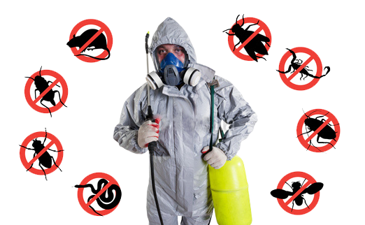

5 Reasons to Get Pest Control Done After Cleaning (Tips & Tricks)

A common dilemma we all face is whether to deep clean our house first or have a pest control service done? Do we call the deep cleaners first or the exterminators? Hence, In this article, we tell you some basic pest control tips and tricks and also tell you why you should get pest control done after house cleaning.
Pest Control should be done after cleaning your house because it helps in:
Ultimately, it comes down to him not feeling wanted enough. Ronaldo has spent nine glittering seasons with Madrid and lifted his fourth Champions League trophy in five years just a few weeks ago, but he has a complicated relationship with club president Florentino Perez.
"It's a personal issue," Balague told Sky Sports in Friday's episode of the
Transfer Talk podcast "Juventus are happy to pay him €30m net per year.
He would earn the same if he signed a new contract at Real Madrid, but he feels he's not wanted
1. Setting the ground
A deep home cleaning service sets the ball rolling. When your home is deep cleaned, professionals use chemicals and disinfectants that leave the surface, walls and ceilings of the house spic and span. This helps to set the stage for pest control. Cleaning the house also helps remove insect nests, clear cobwebs, etc. This is, therefore, the perfect precursor to pest control. When the pest control folks arrive, they have a ready platform to work on. Not only does this make it easier for them, it definitely helps increase the effectiveness of pest control services. Now, aren’t these great pest control tips and tricks? So, book a home cleaning service from UrbanClap before you hire pest control professionals from UrbanClap.
2. Pulling out the bugs
Let us assume your bathroom has just been deep cleaned. As we all know, bathrooms are the biggest breeding ground of various types of pests such as cockroaches, spiders, flies and what not. Another ingenious pest control tips and tricks suggest cleaning the bathroom and especially the bathroom drain. This will clear them of all the insect nests. The pest control will, therefore, be more effective as pests won’t have too many places to hide in. You can easily spot them and target them. Even the ones not immediately visible to the naked eye will be in a more vulnerable position, thereby reacting quicker to pest control measures. This is a very vital advantage of deep cleaning your house before calling the pest control people.
3. Removal of breeding grounds
When your home is deep cleaned, you also end up decluttering your house, which includes disposing of old boxes, toys, shoes, pots, etc. All these objects sit around gathering dust and dirt and become the breeding grounds for insects and termites. With the breeding grounds removed, the house is already sanitised to a large extent. Doing a pest control at such a time would not only prove to be more effective, but it would also seal the house off to pests and prevent them from coming in. So, make sure your house is cleared of all the potential insect breeding grounds before you opt for a pest control service.
4. Resetting of furniture
We often find insects and pests nesting behind couches, under the refrigerator or at the side of the dresser. Basically, they start living in places that are not very accessible, seldom moved and rarely cleaned. However, during a deep home cleaning, furniture that is usually left in a fixed spot is moved around. This dislodges insect nests and makes them venture out. Till the time you get pest control done, you should keep the furniture in a different position to prevent crawlers from returning to their preferred positions after the objects are pushed back to their original places. This step will clear the pest problem from the roots and keep your home pest free for a longer time.
5. Retaining the pest control chemicals
Last but not the least, we come to the most logical argument – why apply pest control chemicals and then have them washed away? A heavy, deep home cleaning will most likely wash away pest control chemicals from the various nooks and corners of the house. This will defeat the whole purpose of getting the pest control done! So, do not make the mistake of carrying out a pest control measure before a home cleaning service. It should always be the other way round. That will ensure your house is clean, sanitised, hygienic and free from disease-spreading pests and insects.